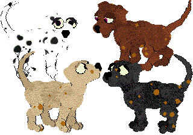
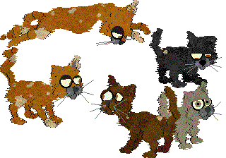

New Petz 5 Breedz
Click breed photo or name to download.
Page: 1
NOTE: If one of my breedz crashes your game,
please read this.
For my People In Petz breedz go here
For my Latest breedz (overwriting and for use with my LNZ-files packages),
go here
For my Team Creation breedz (Rhino, Ostrich etc), go here
For my P.F.Magic Mice breedz go here
For my Oddpetz Transformation breedz (Duckoddz etc) go here
For my Arthropod breedz (Spiders, butterflies etc) go here
For my aquatic stuff (fishies, frogs etc) go here
For my Emoticon breed "OddballzDream" and petz go here
Go here for Species sounds and here for original Catz and Dogz
sounds
Various Species or Fantasy breedz should have their special sounds; also,
all the catz and dogz breedz on this site use external sounds. So if you
want them to sound right in your game, you will have to download the sounds
as well.
My Skorch Odd-petz breed is now available here. All 13 of the originals have now been brought into the Catz games.
 Caliwingz (Catz) |
 Walret (Catz) |
|
 102 (Catz) |
 Jester (Catz) |
|
Flealess Alleys (Catz) Overwriting. With Sleepycat's variation. Does not have Alley attitude. Download sounds for this breed. |
 Flealess Alleys (Catz) Overwriting. With variations listed at PKC Does not have Alley attitude. Download sounds for this breed. |
|
Flealess Alleys with Attitude (Catz) Overwriting. PKC accepted. Download sounds for this breed. True to type, has Alley Attitude |
 Lips (Catz) The 13th and final Original Oddballz converted to Petz 5! And yes, I do intend to make emoticon clothes... |
 Varied Alleys With Attitude (Catz) Download sounds for this breed. Flealess, with Alley Attitude |
 Wetterhoun (Dogz) |
 Boyz (Catz) Download sounds for this breed. Breed should be male only. |
Boy (Dogz) Download sounds for this breed. Breed should be male only. |
|
Fishie (Catz) Download sounds for this breed. |
Arthropodz (Catz) -- WKC accepted Download sounds for this breed. |
Page: 1